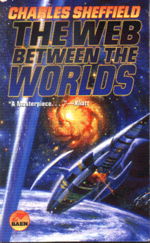

The Web Between the Worldsby Charles Sheffield
publisher: Baen Books
Fiction, 337 pages | 
(book cover art, Copyright ©2001 Charles Sheffield)
|
Return to the Book MenuPrevious|Next
Description:
Rob Merlin is an orphan grown up, a thrillseeker and the best engineer on earth. When he is spotted by a ultra-powerful space tycoon, he is immediately rushed to work on a project called "the beanstalk," a giant elevator into orbit and beyond. But Rob is a risky choice, as he may be far too curious for the tycoon's interests....
Recommended for:Adventurers, space enthusiasts, biologists, thrillseekers, mystery buffs.
Did-you-read questions:
Deadline: February 1, 2005.
These should be easy questions, but you should have the questions ready and keep an eye out during your reading. Each question should be answered with 1-2 sentences.
Note: these questions are not probably not the most important part of the book! Your essay will not have to cover these questions!
- What part of his body does Rob Merlin lose during birth?
- Why does Regulo abhor bright lights?
- What is Caliban?
- Who are Corrie's parents?
- What ethically questionable technique was Morel using to find the cure for cancer?
Report Questions:Deadline: Peer Review Session on February 8, 2005; paper due February 10, 2005.
You should write a 3 - 4 page essay on one of the following questions. Your essay should include examples and references to the book, unless otherwise specified. Page number references are sufficient for citing material from the primary book. If you use outside materials, cite your sources in full. If you would rather write on a different topic, you may, but clear it with Mr. Howe or Ms. Sullivan first.
- Do you think Regulo was a hero or a villian (or something else entirely)? Use examples from the book to support your answer.
- If you have time, take a read of Arthur C. Clarke's Fountains of Paradise,David Gerrold's Jumping Off the Planet, or Kim Stanley Robinson's Red Mars all of which are books in this project, and all of which describe beanstalks. Compare and contrast the construction and applications of these giant elevators.
- Corrie and Rob make quite a team, but Corrie has quite a bit of surprising background that might make it tough for Rob to trust her completely. Do you think they could have a lasting relationship?
- At least once, Rob Merlin refers to Regulo as a father figure for him. What do you think of this assessment?
Graphic and Presentation:
Deadline: February 21 - March 3, 2005.You will give a 10 minute presentation on both of the following:
- Convince your peers that they should (or should not) read this book. (This may include a brief summary of the book.) Give examples of what was cool or worthwhile in the book, and what you got out of it (or didn't).
- Describe a (realistic) science idea that you learned about in this book, citing information from at least 2 external sources (other than the dictionary). If you would like help choosing or understanding an idea from your book, you are invited to come talk to Mr. Howe or Ms. Sullivan.
Note: This presentation should not be just a reading of your paper!Along with this presentation, you should have a graphic that will go with it. A Power Point presentation is recommended, but if you have a special idea for a something else, such as a model, an original video presentation, or a well done drawing/ painting/ sculpture/ etc., you may do so, provided it involves a similar level of effort and polish. Speak to Mr. Howe or Ms. Sullivan first if you are considering an alternate graphic format to the Power Point.
Return to the Book MenuPrevious|Next